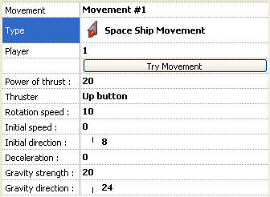

This movement simulates a spaceship with a thruster. The object moves in its current direction, and the thrust, when applied, changes the direction and speed of the movement progressively. The movement deals with external gravity. Such a movement is used to control the ship in games like Asteroids or Lunar Lander.
After selecting the movement you should define the thrust
power (from 0 to 100) and the gravity strength (0 to 100) and direction. All
the rest is handled automatically. Please note that this movement works better
with objects containing 32 directions of animation. The WALKING animation is
used when the ship is moving on the screen, and the JUMP animation is used when
the thruster is applied.
Frame editor properties

Figure 1: Movement properties for the Circular
Movement.
General Properties
Power of thrust: indicates the power of the thruster,
from 0 (no power) to 100 (full power). The thrust is applied to the ship when
you press the selected button.
Thruster: choice of the button to press to activate the thruster. It
can be the Up button or the Fire 1 button.
Rotation speed: indicates the rotation speed of the ship, when
you press left or right keys. From 0 (no rotation) to 100 (full speed).
Initial speed: sets the initial speed of the object, from 0 (stopped)
to 100 (fast).
Initial direction: allows you to choose the initial direction of the
object. If the initial speed is not zero, the ship will immediately move in
that direction at start of frame.
Deceleration: indicates a deceleration factor that slows down the ship
as it moves, from 0 to 100. If 0 the ship will not slow down. If 100 it will
stop instantly. Please note that the power of the thruster must be higher than
this value for the thruster to have effect.
Gravity strength: indicates the strength of the gravity, from 0 to 100.
0 means no gravity. 100 is a really strong gravity. Please note that the power
of the thruster must be higher than the gravity strength for the ship to counteract
the gravity.
Gravity direction: allows you to choose the direction of the gravity.